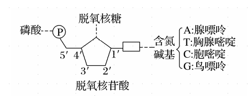
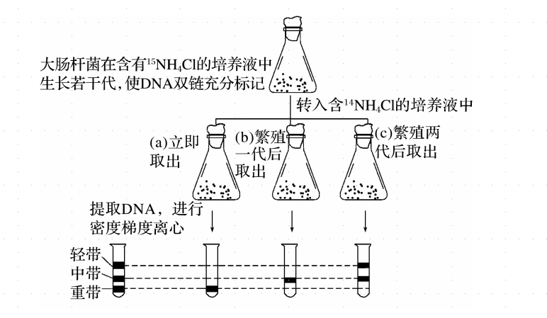

生物步步高18.DNA 分子的结构、复制及基因的本质
A T 间形成 2 个氢键，G C 间形成 [1]3 个氢键。
脱氧核苷酸的结构？ 
-
DNA 分子的双螺旋结构
-
DNA 分子由两条脱氧核苷酸链组成，这两条链按反向平行的方式盘旋成双螺旋结构。
-
外侧：脱氧核糖和[2]磷酸交替连接，构成基本骨架。
-
内侧：两条链上的碱基通过氢键连接成碱基对。
-
碱基互补配对遵循以下原则：A 一定与 T 配对，G 一定与 C 配对。碱基之间的这种一一对应的关系，叫做碱基互补配对原则。
-
-
-
DNA 分子的结构特性
-
多样性：具有 个碱基对的 DNA 具有 种碱基对排列顺序。
-
特异性：每种 DNA 分子都有其特定的碱基排列顺序。
-
稳定性：两条主链中磷酸与脱氧核糖交替连接的顺序不变，碱基配对方式不变等。
-
判断：DNA 分子一条链上的相邻碱基通过“磷酸—脱氧核糖—磷酸”相连。 错误，通过 脱氧核糖-磷酸-脱氧核糖 相连。
判断：DNA 分子中(A＋T)/(C＋G)的值越大，该分子结构稳定性越低。 正确，考虑氢键数量。
判断：人体内控制 β-珠蛋白的基因由 1700 个碱基对组成，其碱基对可能的排列方式有 种。 错误，只有一种。
判断：DNA 分子的多样性与其空间结构有关。 错误。
DNA 分子多样性的原因是？ 不同 DNA 分子中碱基排列顺序是千变万化的。
判断：DNA 分子中特定的脱氧核苷酸序列代表了遗传信息。 正确。
-
DNA 分子的复制
-
方式推测：沃森和克里克提出遗传物质自我复制的假说：DNA 分子复制方式为半保留复制。
-
实验证据
-
实验方法：同位素示踪技术和离心技术。
-
实验原理：含 的双链 DNA 密度大，含 的双链 DNA 密度小，一条链含 、一条链含 的双链 DNA 密度居中。
-
实验假设：DNA 以半保留的方式复制。
-
实验过程：
-
过程分析：立即取出，提取 DNA→ 离心 → 全部重带。繁殖一代后取出，提取 DNA→ 离心 → 全部中带。繁殖两代后取出，提取 DNA→ 离心 → 轻带、中带。
-
实验结论：DNA 的复制是以半保留的方式进行的。
-
-
复制过程
-
概念：以亲代 DNA 为模板合成子代 DNA 的过程。
-
时间：细胞有丝分裂的间期和减数第一次分裂前的间期。
-
过程：
-
解旋：需要细胞提供能量，需要解旋酶作用，把两条螺旋的双链解开。
-
合成子链
-
模板：解开后的两条母链
-
原料：游离的四种脱氧核苷酸
-
酶：DNA 聚合酶等。
-
原则：碱基互补配对原则。
-
-
重新螺旋
-
-
场所：真核细胞在细胞核、线粒体、叶绿体中，原核细胞在拟核、细胞质。
-
特点：半保留复制、边解旋边复制、多起点双向复制。
-
方式：半保留复制
-
结果：形成两个完全相同的 DNA 分子。
-
意义：DNA 分子通过复制，将遗传信息从亲代传给了子代，从而保持了遗传信息的连续性。
-
保障：
-
DNA 分子独特的双螺旋结构，为复制提供了精确的模板；
-
通过碱基互补配对，保证了复制能够准确地进行。
-
-
-
每条染色体上含有一个或两个 DNA 分子。
基因是？ 具有遗传效应的 DNA 片段。
基因的脱氧核苷酸排列顺序代表遗传信息。
判断：在一个细胞周期中，DNA 复制过程中的解旋发生在两条 DNA 母链之间。 正确。
判断：DNA 分子复制过程中的解旋在细胞核中进行，复制在细胞质中进行。 错误。
判断：细胞中组成一个基因的嘌呤碱基与嘧啶碱基数量不一定相等。 错误。
判断：DNA 的两条子链都是连续合成的。 错误，只能从 5'向 3'延伸，一条连续，一条不连续。
判断：DNA 分子复制从多个起点同时开始。 错误，并非同时进行。
DNA 分子的复制是一个边解旋边复制的过程，复制需要模板、原料、能量和酶等基本条件。